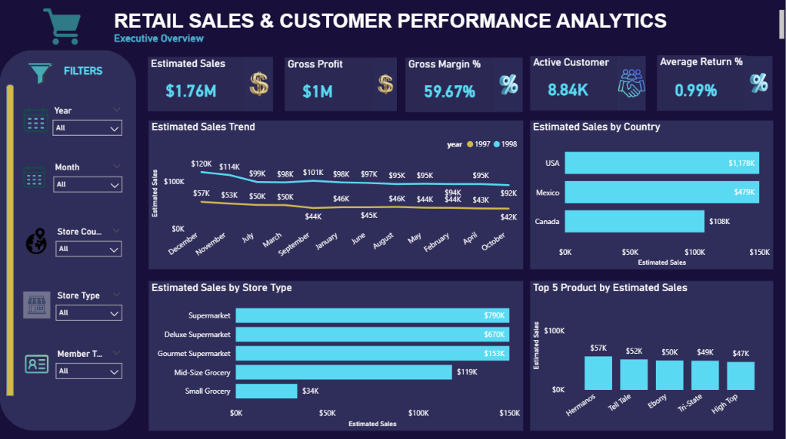

Retail Sales & Customer Performance Analytics Dashboard
Built an end-to-end retail sale analytics dashboard to provide a consolidated view of business performance, using MySQL to clean, transform, validate, EDA process and created star-schema analytical model in power BI. This dashboard was developed to identify performance drivers, high-value segments, underperforming areas, and return patterns for customer targeting, product optimization, store benchmarking, geographic performance and return management.